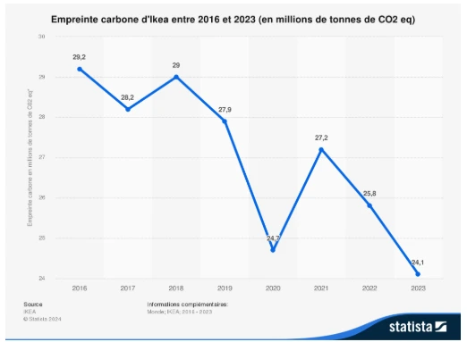

recherche
recherche
En effet Ikea s’engage et encourage ses consommateur à faire des économie d’eau et d’énergie, à faire le trie. Ikea promeut aussi l'entretien et la réparation de leurs produits tout comme la vente d'occasion. En effet, il propose des espaces seconde vie dans certains magasins pour y vendre ou y acheter des meubles d’occasion.
Depuis une dizaine d'années, Ikea vise l'indépendance énergétique depuis 2021 ils ont dépassé cet objectif. Et ce en installant presque 1 million de panneaux solaire sur le toit de leurs magasins et entrepôts mais aussi grâce à l'acquisition de parc solaire et éolien pour mettre en place un service de vente d’énergie verte.
Ikea est majoritairement critiqué pour sa consommation de bois. En effet, l'entreprise consomme 20 millions de mètres cubes de bois par an. Pour se fournir ce boit Ikea achète des milliers d’hectares de forêt en Pologne, Roumanie avec aussi des projet en nouvelle zélande et au Brésil. Le but de ces achats est de les raser sans considération de la biodiversité ou ancienneté de la forêt. De plus, certains militants ayant dénoncer ce comportement subissent des intimidations et menaces de mort.